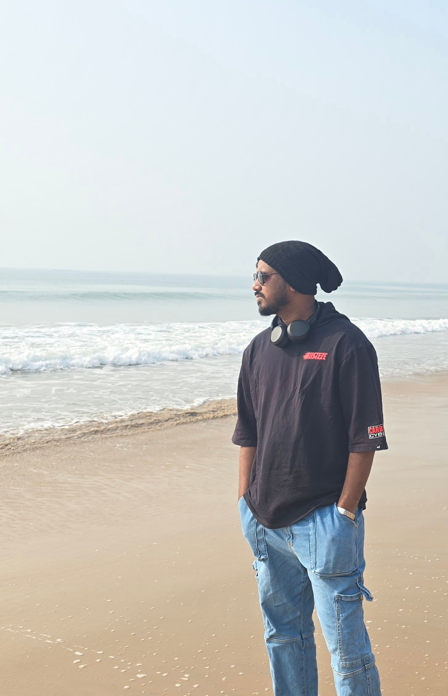

I’m Pallab Mahato — a Data Scientist working at the intersection of Machine Learning, Risk Analytics, Product Strategy, and Decision Systems. I enjoy building intelligent systems that transform raw data into scalable business impact.

I specialize in Data Science, Credit Risk Analytics, and Machine Learning, with experience developing production-grade underwriting models, feature engineering pipelines, forecasting systems, and real-time decision frameworks. My work focuses on transforming complex data into scalable business impact across fintech and lending ecosystems.
Beyond analytics, I’m deeply driven by curiosity, continuous learning, and technology-led innovation. Outside work, I enjoy football, hiking in the mountains, music, travelling, and exploring ideas across AI, systems design, and product thinking.
Developed production-grade XGBoost risk models using behavioral and bureau features, reducing portfolio risk by 30% while scaling whitelist volume from 20L to 12Cr.
Built scalable feature store pipelines generating 110K+ user-level features daily for real-time and offline ML systems.
Designed inferential Personal Loan risk models using bureau data achieving 67% Gini and enabling real-time underwriting.
Built LightGBM conversion models improving NMV by 5% through intelligent targeting and segmentation.
Created ARIMA forecasting systems and Tableau dashboards reducing provisioning errors and improving strategic visibility.
Implemented NLP-based auto-tagging systems reducing operational effort and improving request resolution efficiency.
Dream place to fulfil my dreams. The place where I explored research, technology, leadership, and discovered my passion for data science.
A transformative phase of discipline, values, and self-growth. The environment that deeply shaped my mindset and ambition.
A place where my roots lie. The foundation that shaped my discipline, curiosity, and ambition.
I play football, badminton, and volleyball during weekends. Sports help me stay competitive and mentally fresh.
Love exploring mountains, nature, and peaceful places. Hiking and travel give me clarity and inspiration.
Bayern Munich supporter forever. Mia San Mia.
Love listening to music and currently trying to learn guitar.
Huge fan of crime and thriller genres. Always fascinated by intelligent storytelling.
Open to opportunities across Data Science, Machine Learning, Product Analytics, and Credit Risk.